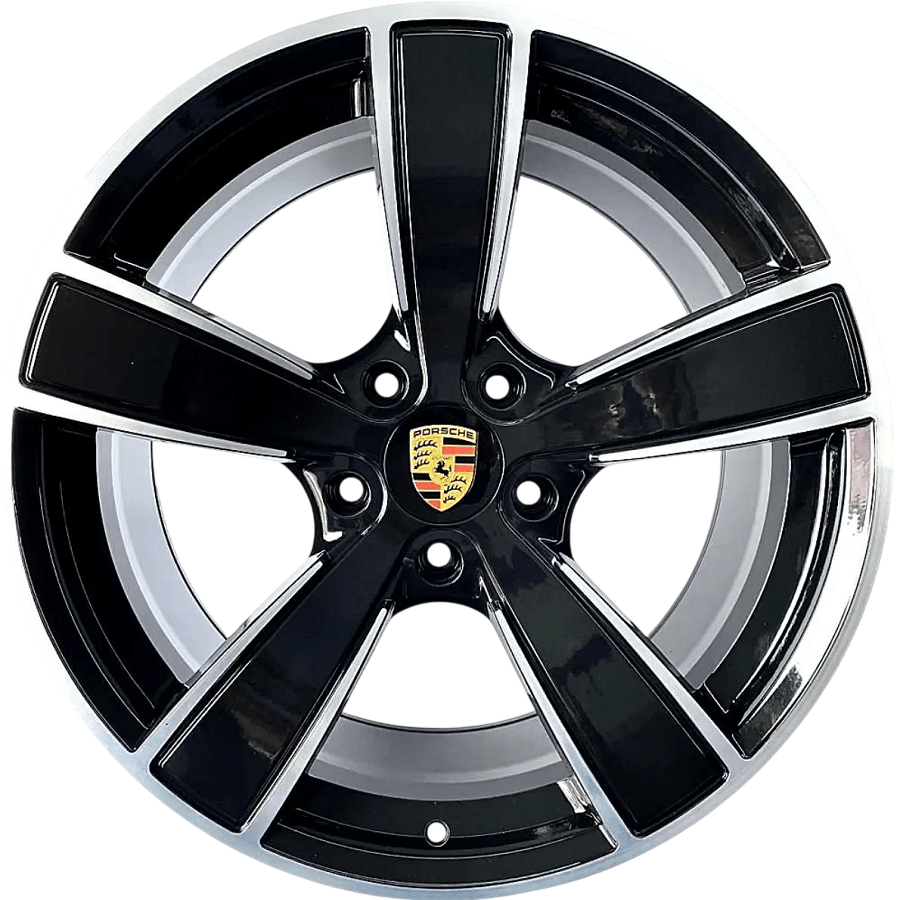
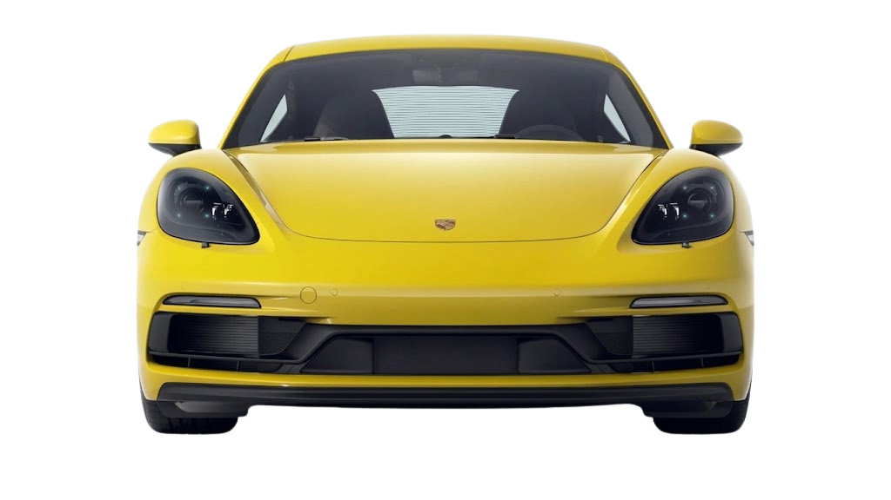
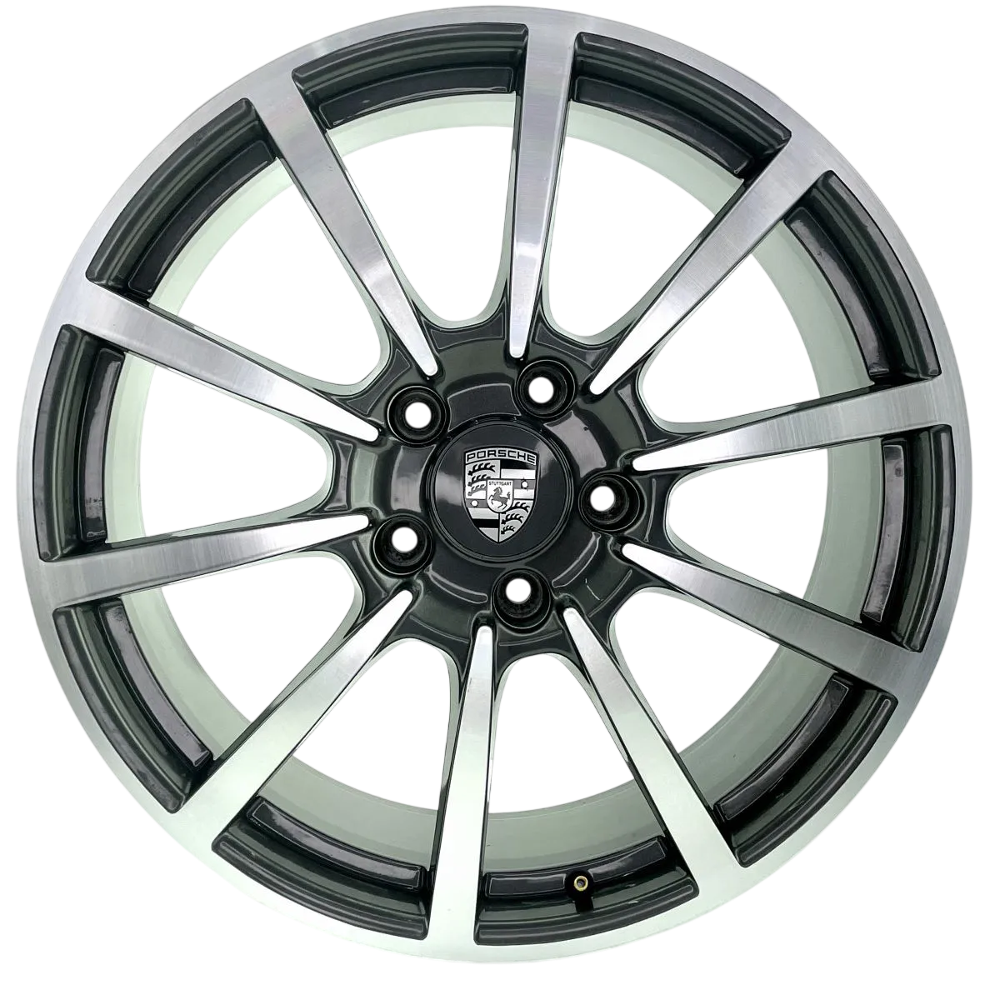
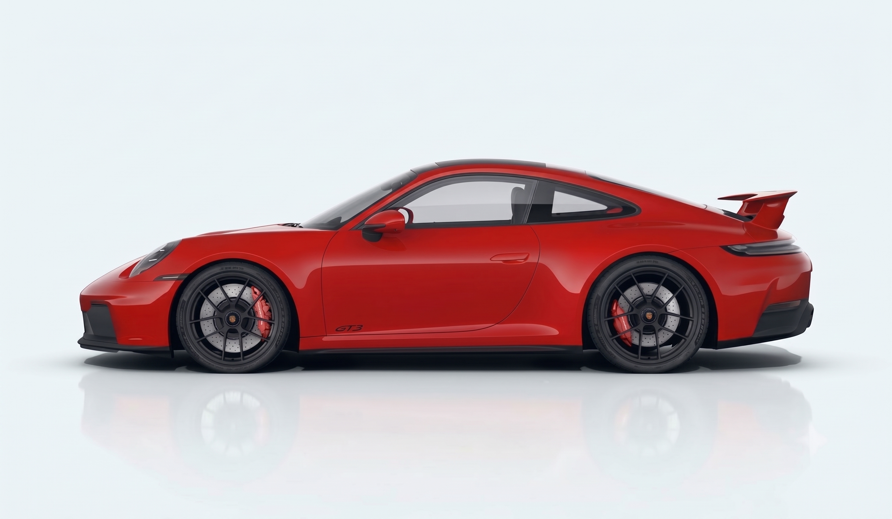

Roda
Roda de liga leve com design
icônico de 5 raios largos, inspirada no clássico estilo Fuchs


Porsche 718 Cayman GTS 4.0

Aceleração
de 0 a 100km/h
velocidade máxima
0CV
Roda de liga leve com design
icônico de 5 raios largos, inspirada no clássico estilo Fuchs

Roda de liga leve com design esportivo multiraios
Toque nos cartões para descobrir
.jpg)
o Cayman R era a versão mais focada em desempenho, com 330 cv e redução de peso.
boxer de 6 cilindros, naturalmente aspirado.

o GT4 utilizava um motor 3.8 de 385 cv, tornando-se uma das versões mais voltadas para pista da família Cayman.
O 981 GT4 recebeu diversos componentes derivados do 911 GT3, incluindo elementos de suspensão e freios, além de aerodinâmica específica

Painel totalmente digital e assistentes eletrônicos de condução
Aerodinâmica ativa, com elementos que se ajustam sozinhos conforme a velocidade
 01
01
A Porsche apresentou o Cayman GT4 Clubsport, uma versão exclusivamente de competição baseada no Cayman GT4. O carro recebeu preparação específica para circuitos e perdeu diversos equipamentos necessários para utilização nas ruas.
/i.s3.glbimg.com/v1/AUTH_cf9d035bf26b4646b105bd958f32089d/internal_photos/bs/2022/y/c/sseKRQQgmxmRBsukBwNA/.17.jpg) 02
02
O GT4 RS levou a filosofia de pista ainda mais longe. Seu motor 4.0 boxer de seis cilindros aspirado produz 500 cv, e o carro recebeu diversas soluções aerodinâmicas inspiradas no automobilismo.